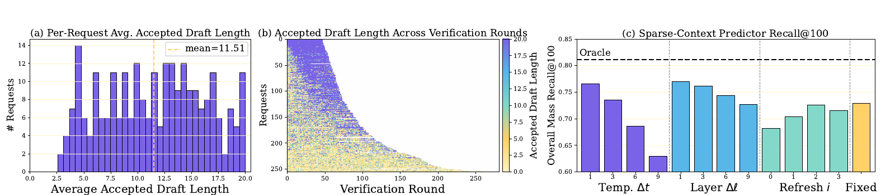
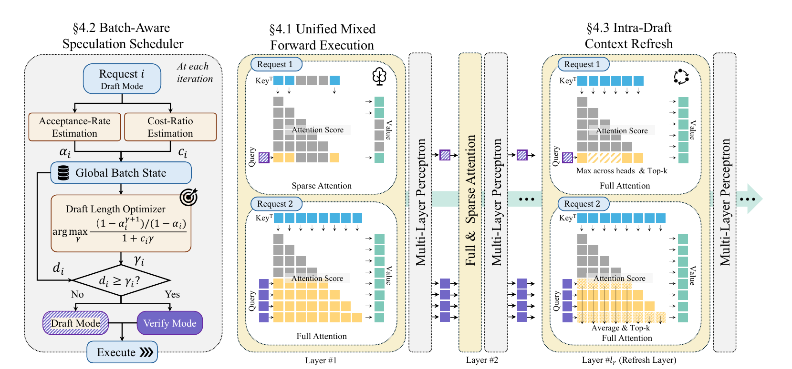
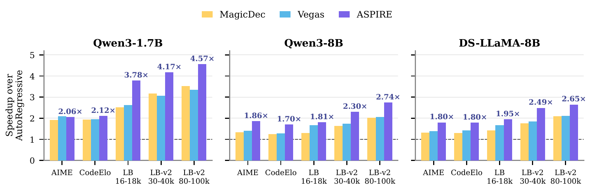
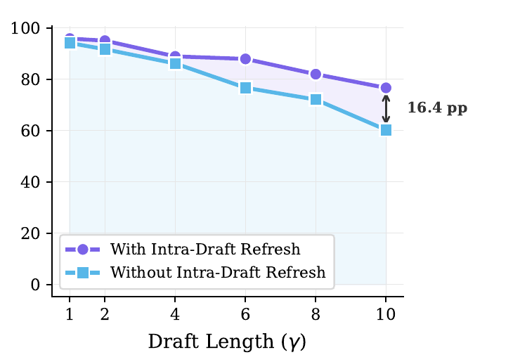

ASPIRE: Asynchronous Batched Self-Speculative Decoding for Long-Context LLM Inference
長上下文解碼的注意力（attention）每產生一個 token 都要重新讀取每個請求自己的 key-value cache（KV cache）；傳統同步式 self-speculation 又要求整個 batch 同進同退，於是有人太早驗證、有人白做過長 draft。ASPIRE 把 batch 內每個請求的 draft/verify 決策拆開，卻仍在一次 target-model forward 中共用 MLP 計算，並以單一 refresh layer 在 draft 途中更新 sparse context。
實驗事實在三個模型、五組 reasoning／長上下文 workload 上，ASPIRE 相對 autoregressive decoding 的 decode-forward throughput 為 \(1.70\text{–}4.58\times\)，相對最強既有 self-speculative baseline 的平均 speedup 約再提高 27%；但主要數據來自單張 H100 NVL，且明確排除 prefill，因此不能直接解讀成端到端 TTFT、TPOT 或服務成本改善。 Abstract, §5.1–§5.3 · PDF pp.1, 8–10 · Fig. 1, Table 1
文章目錄
讀懂 ASPIRE 前，只需要掌握哪三個解碼成本？
理解障礙在於：ASPIRE 同時談 batching、sparse attention 與 speculative decoding，但三者節省的不是同一種成本。先把它們分開，後面的排程公式才不會只像一串符號。
Batching 主要攤平 model weight，卻攤不平每個人的 KV cache
解碼器每一層大致包含多層感知器（multi-layer perceptron, MLP）與 self-attention。batch 變大後，多個請求可共用一次模型權重讀取，MLP 從 GEMV-like 工作轉向較有效率的 GEMM-like 工作；但每個請求的歷史 token 不同，attention 仍得各自讀完整 KV cache。context 越長，這段低算術強度的記憶體流量就越突出。 §1–§2 · PDF pp.2–3
Self-speculation 是「便宜提案、昂貴但精確的批次驗證」
自我推測解碼（self-speculative decoding）不另養小模型，而由同一 target model 先用 sparse-context attention 逐 token 起草，再用 full-context attention 一次驗證整段 draft。若 draft 中前 \(a_i\) 個 token 被接受，就連同 full-attention 產生的下一個 token 一起提交；因此一次完整 KV 讀取可能換回多個 output token。所有候選仍經 target distribution 驗證，sparse attention 只影響提案，不應改變最終分布。 §2, Appendix B.2 · PDF pp.3, 17
Draft 越長，省下的 verification 越多，錯提案與 context staleness 也越多
draft length 太短，full-attention verification 過於頻繁；太長則可能計算大量最後被拒絕的 token。Vegas 類方法只在 verification boundary 更新 sparse KV selection，draft 走得越遠，選出的 context 與目前 query 越不相符。ASPIRE 要同時解兩個控制問題：每個 request 何時驗證，以及 draft 途中如何避免 sparse context 過期。 §1, §3 · PDF pp.2, 4–5 · Fig. 2
因此下一個問題不是「sparse attention 能否更快」，而是「不同請求的最佳 draft 節奏根本不同時，整批同步還合理嗎？」
為何固定 draft 長度與整批同步會一起浪費長上下文算力？
論文先用量測指出同步式 batching 的根本錯配：最佳 draft length 既因 request 而異，也會在同一 request 的生成途中變動。
跨 request：同一個固定長度無法服務整個 batch
作者讓 256 個 LongBench request 都最多 draft 20 token；它們的每-request 平均 accepted draft length 從 2.56 到 20.00，平均為 11.51。若全 batch 共用一個長度，偏短會讓高接受率 request 過早 verification，偏長則讓低接受率 request 白算即將被拒絕的 token。 §3 · PDF p.4 · Fig. 2(a)
同一 request：最佳驗證點也不是固定常數
Figure 2(b) 的每一列代表一個 request；列內顏色隨 verification round 明顯變動，表示 accepted draft length 會沿生成過程起伏。因此即使為每個 request 離線選一個固定長度，仍無法追上 token-level 的局部變化。 §3 · PDF p.4 · Fig. 2(b)
{kind=link}

最接近的方法仍卡在兩個同步邊界
MagicDec 與 Vegas 都以 batch-wide draft/verify phase 推進；Vegas 雖用 verification token 的 attention score 挑 sparse context，卻只在驗證後更新。這造成兩個浪費：request 不能自行選 verification 時點，較長 draft 的 sparse context 又會逐步變 stale。 §1, §6 · PDF pp.2, 10–11
由症狀可推導三項需求：同一 forward 必須容納不同角色、排程器必須同時估計接受率與當下成本、sparse context 必須在 verification 之間也能更新。這三項剛好對應 ASPIRE 的三個元件，而不是彼此獨立的 feature list。
若同一 batch 的兩個請求想在不同時刻驗證，怎麼仍共用一次 forward？
把一個 batch 想成兩名共乘者：request A 的草稿很穩，想再 draft；request B 已累積足夠候選，應立即 verify。傳統作法要求兩人同站下車，ASPIRE 則讓兩人在同一班車裡執行不同 attention 路徑。
一個兩-request 的 miniature step
假設 A 目前 draft length \(d_A=2\)，scheduler 估出的 target \(\gamma_A=5\)；B 則是 \(d_B=6\)、\(\gamma_B=6\)。本輪 A 只產生 1 個 sparse-attention token，B 以 full attention 同時計算 \(d_B+1=7\) 個位置來驗證其 draft 並取得下一 token。兩者的 attention context 與 decode length 不同，但使用同一 target model，MLP 權重與 batched matrix computation 仍可共用。 §4.1–§4.2 · PDF pp.5–7 · Fig. 3
分析這個設計的關鍵不是把 verification 非同步放到另一條 hardware pipeline，而是把「角色差異」降成一次 forward 內每個 request 的 metadata：一組讀 sparse KV、另一組讀 full KV。它保留 batch 的 MLP 效率，又解除 attention path 的 lockstep。
驗證時點要看「接受率」也要看「這一批現在多貴」
只根據最近一次是否全數接受而加減 draft length，忽略了 full-context 長度、sparse budget 與 batch composition。ASPIRE 估計每個 request 的 acceptance rate \(\alpha_i\) 與 draft-to-verify cost ratio \(c_i\)，找出預期每單位時間提交 token 最多的 \(\gamma_i\)。同樣的 \(\alpha_i\) 下，context 越長、verification 越貴，允許較長 draft 才可能划算。 §4.2 · PDF pp.6–7
直覺建立後，下一章把一次 step 的狀態更新、公式與 refresh 資料流接在一起。
ASPIRE 如何把逐請求決策、mixed forward 與 context refresh 串成閉環？
每個 active request 都維護 draft length \(d_i\)、sparse context \(S_i\) 與 smoothed acceptance rate \(\alpha_i\)。每一輪先決定角色，再執行 mixed forward，最後以 refresh layer 為下一個 draft step 更新 context。
{kind=link}

步驟一：用 expected token yield 選 target draft length
若 request \(i\) 在 verification 前 draft \(\gamma\) 個 token，論文假設 token acceptance 近似幾何過程，預期可提交 token 數為 \((1-\alpha_i^{\gamma+1})/(1-\alpha_i)\)。令一次 draft 與一次 verification 的預測時間分別為 \(T_i^{\mathrm{draft}}\) 與 \(T_i^{\mathrm{verify}}\)，並定義 \(c_i=T_i^{\mathrm{draft}}/T_i^{\mathrm{verify}}\)，則 scheduler 枚舉 \(0\ldots d_{\max}\)： §4.2 · PDF p.6
分子是每個 speculation cycle 預期提交的 token 數；分母把 cycle time 除以 \(T_i^{\mathrm{verify}}\) 正規化。當 \(d_i\ge\gamma_i\) 或碰到 \(d_{\max}=16\) 時 verify；尚無觀測時至少先 draft \(\gamma_{\mathrm{init}}=3\)。
步驟二：用 batch-aware timing model 更新成本比
ASPIRE 以 sample generation trace 擬合三個係數，將一輪時間近似為固定 forward 成本、總 forward token 的 MLP 成本，以及總 KV 讀取量的 attention 成本： §4.2 · PDF p.7
\(n_t\) 是本輪所有 draft token 與 verification positions 的總數；\(D_t,V_t\) 分別是 draft／verify request 集合；\(|S_j|\) 是 sparse context 長度，\(\ell_j\) 是 full context 長度。模型不是精確 kernel simulator，而是把 batch composition 壓成可線上更新的成本比。
步驟三：一次 mixed forward 後各自更新狀態
draft request 以 \(S_i\) 產生 1 個 token 並令 \(d_i\leftarrow d_i+1\)；verify request 以 full context 計算 \(d_i+1\) 個 positions，比對 draft prefix，提交 accepted prefix 與下一個 verified token，再把 \(d_i\) 歸零。verification outcome \(a_i\) 轉成觀測接受率，並以 \(\omega=0.8\) 做 exponential smoothing。 §4.1–§4.2 · PDF pp.5–7 · Algorithm 1, PDF p.16
步驟四：用一個 full-attention layer 刷新 sparse pages
draft 時除了 refresh layer \(\ell_r\) 外，其餘 layer 都使用 sparse attention；\(\ell_r\) 讀 full KV，對每個 prior position 取 max-over-head attention weight，再按 KV page 加總。下一步保留最近 \(L=8\) pages，其他名額選最高分 pages；總 budget 為 \(k_i=\max(k_{\min},\lceil\rho P_i\rceil)\)，實驗採 page size 16、\(\rho=7\%\)、\(k_{\min}=32\)，refresh layer 選倒數第二層。 §4.3–§5.1 · PDF pp.7–8
作者主張這四步能在保留 target distribution 精確性的前提下，讓每個 request 使用自己的 speculation trajectory；真正是否划算，取決於 mixed execution、scheduler 與 refresh 的成本能否由後續實驗逐一支持。
吞吐、品質與 ablation 是否共同支持這套機制？
實驗以 Qwen3-1.7B、Qwen3-8B 與 DeepSeek-R1-Distill-LLaMA-8B，涵蓋 AIME 2025、CodeElo、LongBench 16k–18k，以及 LongBench-v2 30k–40k／80k–100k。主要硬體是一張 NVIDIA H100 NVL 96GB，BF16、torch.compile 與 CUDA graphs；metric 是排除 prefill 的 decoding forward output tok/s。 §5.1 · PDF p.8
主張一：context 越長，mixed self-speculation 的收益越大
實驗事實相對 autoregressive decoding，ASPIRE 在三個模型上的最高 long-context speedup 分別為 \(4.58\times\)、\(2.75\times\)、\(2.66\times\)；Across five workloads 的平均 speedup 分別為 \(3.34\times\)、\(2.08\times\)、\(2.14\times\)。同一模型從 16k–18k 移到 80k–100k 時，加速普遍上升，符合「full KV read 越昂貴，verification 攤提越有價值」的機制。 §5.2 · PDF p.9 · Table 1, Fig. 1
{kind=link}

限制：request 會 cyclic replay 直到量測穩定，沒有真實 arrival process、queueing 或 SLO tail latency；prefill 也不在 metric 內。 §5.1 · PDF p.8
主張二：解除同步與 batch-aware scheduler 都有獨立價值，但不是每格都贏
實驗事實Qwen3-8B 在 80k–100k 上，ASPIRE 為 \(2.75\times\)，同步固定長度的 ASPIRE-Fixed 為 \(2.22\times\)，只用簡單接受率 feedback 的 ASPIRE-FSM 為 \(2.60\times\)。但 Qwen3-1.7B 的 AIME25 由 Vegas \(2.10\times\) 略高於 ASPIRE \(2.06\times\)，CodeElo 則 ASPIRE-Fixed \(2.19\times\) 高於 ASPIRE \(2.12\times\)。 §5.2–§5.3 · PDF pp.9–10 · Table 1
分析完整 scheduler 的價值是跨 model／workload 的一致性，而不是保證每一格最佳。hindsight oracle 仍比 ASPIRE 高 4.7–20.2%，平均 gap 10.4%，代表 acceptance estimator 與局部成本近似尚有可利用空間。 Appendix B.3 · PDF p.17 · Table 3
主張三：intra-draft refresh 確實對抗 context staleness
實驗事實在 Qwen3-8B、16k–18k context、固定 draft length \(\gamma=10\) 時，沒有 refresh 的 acceptance 降到 60.3%，有 refresh 則維持 76.6%，差 16.4 percentage points。Qwen3-8B 的單層 refresh overhead 在 16k／32k context 分別只占 cycle time 1.03%／1.06%。 Appendix B.5, D · PDF pp.19, 22 · Fig. 5
{kind=link}

限制：這個 causal sweep 固定在 Qwen3-8B、LB[16k–18k] 與特定 sparse budget；其他模型只提供 refresh-layer position sweep，未給相同完整曲線。
主張四：exactness 與 tensor parallelism 有初步支持，但部署校準不可省
實驗事實greedy LongBench-v1 的 1,460 筆樣本中，ASPIRE 與 autoregressive macro score 為 51.72 對 51.92，單 task 最大差 0.5 point；作者將小差異歸因於 batched floating-point nondeterminism。Qwen3-8B 在 TP=2 上取得 AIME \(2.16\times\)、LB[16k–18k] \(2.07\times\)，但把 TP=1 timing coefficients 直接搬到 TP=2，LB speedup 會掉到 \(1.51\times\)。 Appendix B.2, B.4 · PDF pp.17–18 · Tables 2, 4
限制：TP 實驗只到 2-way，沒有 multi-node collective；timing model 每種 deployment configuration 都需要短 profiling pass。
從單張 H100 的 decode throughput，哪些 serving 結論仍不能成立？
最可信的結論是「在受測單 GPU／TP=2 設定中，逐 request mixed speculation 能提升 decode-forward throughput」。把它擴寫成「production serving latency 或 cost 已改善」則超出證據。
設計強項：三個元件對應三種可觀測浪費
分析Figure 2 先證明跨 request 與時間內的 draft 異質性，再以 mixed forward 解同步、cost-aware scheduler 解 verification 時點、refresh layer 解 sparse context staleness。Figure 5 與 ablation 又分別回扣後兩個機制。這條 problem-to-component-to-test 鏈比只展示 end-to-end speedup 更有說服力。
六個不可越過的證據邊界
- 不是端到端 latency：metric 排除 prefill，也沒有 TTFT、TPOT/TBT、P95/P99 或 request completion time。
- 不是 production arrival process：request cyclic replay；沒有 burst、queueing、priority、cancellation 或 dynamic admission。
- continuous batching 尚未整合：論文明言與 general continuous batching、尤其 chunked prefill 的整合是 future work。 §6 · PDF p.11
- 硬體外部效度有限：主要是單張 NVIDIA H100 NVL，平行實驗只到 TP=2；沒有 AMD GPU、multi-node network 或 heterogeneous cluster。
- 比較混合了容量效果：部分 MagicDec/Vegas row 的最大可容納 batch 較小；這符合 system-throughput 比較，但不是所有方法固定相同 batch size 的純 kernel 比較。 Appendix C · PDF pp.20–22 · Tables 6–10
- 校準會老化：cost-model functional form 可跨 TP，但 coefficients 不可；stale coefficients 在某些 workload 會大幅損失吞吐。 Appendix B.4 · PDF p.18
品質證據支持 implementation sanity，不等於全面語意等價驗證
分析exact speculative decoding 在理論上保留 target distribution；LongBench greedy check 也沒有顯著品質崩壞。但八個 task、單一 8B model 與 greedy decoding，主要是抓 page selection／acceptance implementation bug，不足以量化 stochastic sampling 下的 distributional equivalence、長 reasoning answer 的 rare divergence 或不同 kernel 數值路徑。
在有頻繁 preemption、LoRA adapter 切換或跨 GPU KV migration 的服務中，mixed forward 的 request heterogeneity 可能讓 kernel shape 與 cache locality 更不規則；論文沒有量測這些控制面成本，因此實際 speedup 可能低於封閉 replay。
要把 ASPIRE 推進真實 serving，下一輪實驗應先補什麼？
下一步應保留 ASPIRE「每 request 有自己的 speculation trajectory」的核心，但把觀測、決策與量測邊界推到完整 serving stack。
把 mixed forward 接到 continuous batching 與 chunked prefill
分析實作應允許新 request admission、prefill chunk、draft request 與 verify request 同時競爭 batch slots，並回報 TTFT、inter-token latency 與 goodput。這能測出 mixed decode 是否傷害 prefill progress，而不只看 decode-forward tok/s。
把 scheduler 從 per-request 近似推進 constrained batch optimization
推測現行 scheduler 以 homogeneous-batch approximation 求每個 \(c_i\)，但真實 mixed batch 中 request 互相改變 kernel shape。可用短 horizon optimizer 或 contextual bandit 直接以 batch composition、context length、SLO slack 與 cache pressure 選 \(D_t,V_t\)，並以 hindsight oracle gap 作為可量化上界。
跨架構、跨節點重做 cost-model calibration study
分析至少比較 H100／B200 與 AMD Instinct，加入 TP=4/8、multi-node collective，再測 model size、GQA ratio、KV precision 與 paged-attention kernel 對 \(\beta_{\mathrm{mlp}},\beta_{\mathrm{attn}}\) 的影響。目標不是只報新 speedup，而是找出 coefficients 何時可遷移、何時必須重 profile。
研究問題
- 當 queueing 與 SLO slack 納入目標後，最大 throughput 的 \(\gamma_i\) 是否仍是正確 verification 點？
- refresh layer 能否依 request／layer 動態開關，使短 context 不支付不必要的 full-attention overhead？
- batch size 差異中，有多少收益來自 mixed execution 本身，有多少來自更佳 memory footprint 與更大 admission capacity？
- 若 sparse page selection、KV quantization 與 prefix sharing 同時存在，exactness、cache ownership 與 page score 應如何協調？
- 能否以部署後 drift detector 自動觸發三係數重校準，而不讓 stale model 悄悄侵蝕 goodput？
如何追查 ASPIRE 的術語、公式與關鍵證據？
本節集中書目、術語與最短證據路徑；摘要中的所有主要數字都可回到下列 PDF 位置。
書目資料
- 正式標題
- ASPIRE: Asynchronous Batched Self-Speculative Decoding for Long-Context LLM Inference
- 作者
- Amir Ziashahabi、Hossein Entezari Zarch、Lei Gao、Murali Annavaram、Salman Avestimehr
- 發表資訊
- Conference on Language Modeling（COLM）2026；arXiv:2609.17943v1，2026-09-16 提交
- 分類
- LLM Systems / Speculative Decoding。分析主要貢獻是 self-speculative decoding 的 runtime、per-request scheduler 與 sparse-context refresh，而不是新模型架構或 cluster network。
- 頁數
- 共 22 頁
- 原始資源
- arXiv 論文頁面 · 作者程式碼 · 開啟本地 PDF
術語表
- Draft / Verify
- 以較便宜的 sparse attention 逐 token 提案；再以 target model full attention 一次檢查一段候選。
- Accepted draft length
- 一次 verification 中，從 draft 開頭連續被 target distribution 接受的 token 數。
- Unified mixed forward
- 同一 target-model invocation 內，同時放入 sparse-attention draft request 與 full-attention verify request。
- \(\alpha_i\)
- request \(i\) 的 smoothed token acceptance-rate estimate。
- \(c_i\)
- 預測 draft step time 除以 verification step time 的成本比。
- \(\gamma_i\)
- scheduler 為 request \(i\) 選出的 target draft length。
- Refresh layer
- draft 途中唯一執行 full attention 的 layer，用其 attention scores 重選下一步 sparse KV pages。
關鍵證據索引
- 問題與 batch/attention 成本不對稱：§1–§2，PDF pp.2–3。
- draft 異質性與 signal 選擇：§3，PDF pp.4–5，Figure 2。
- mixed forward、scheduler 與 refresh：§4，PDF pp.5–8，Figure 3。
- 主要 throughput 與 ablation：§5.1–§5.3，PDF pp.8–10，Table 1。
- 品質、oracle gap、TP calibration：Appendix B.2–B.4，PDF pp.17–18，Tables 2–4。
- refresh robustness 與長 draft 效果：Appendix B.5, D，PDF pp.19, 22，Table 5, Figure 5。